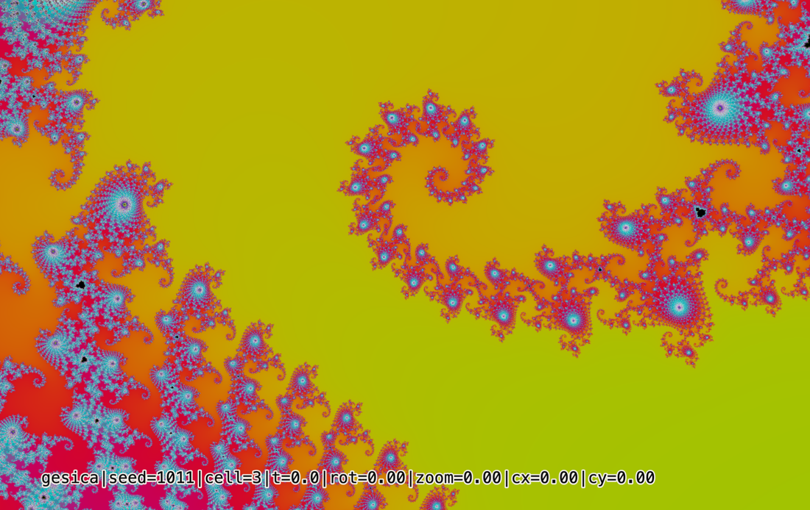
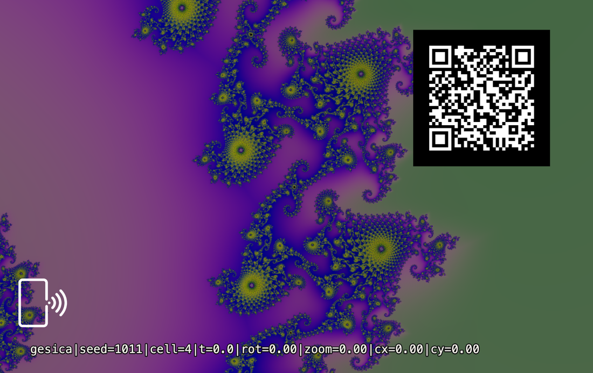

Vibe Cards · Card 013 · Parametric deck
A card that is a rule, not a picture. Seven numbers are printed along the bottom of it. Type them into the deck and the same picture comes back, exactly.


That line is the whole card. It is every input the renderer took. Nothing else was involved, and nothing random was left unwritten.
gesica|seed=1011|cell=3|t=0.0|rot=0.00|zoom=0.00|cx=0.00|cy=0.00
Open the deck, find the GESICA panel, and type these numbers into the sliders. You get this picture back, exactly, on any machine. The live engine at persona500.com/gesica is the same picture at the moment it starts moving. Since 23 August 2026 the live page reads the address too: open the second link below and it opens on this exact piece, held at these numbers, with the moving field around it.
Regenerate it on the deck See it move at this address Print it yourself
seed | Which picture. Same seed, same picture, every time. |
|---|---|
cell | Each seed makes eight pieces, numbered from zero. This card is piece three. |
t | The moment on the clock, in seconds. Zero is the instant the live page opens. |
rot | How far the view is turned. Zero is not turned. |
zoom | Extra zoom on top of the seed's own. Zero is none. |
cx, cy | Where the centre of the view sits. Zero and zero is the seed's own centre. |
The deck panel is a line-for-line copy of the live engine: its shader, its seed maths and its random numbers. That is why the numbers on the card bring the picture back.
| Card size | 85.6 × 53.98 mm — a normal bank-card blank |
|---|---|
| Artwork | Exported at 2066 × 1319, the full bleed size |
| QR code | 20 mm on the back. It opens this page. |
| Tap mark | A small phone symbol on each face. Hold your phone there. |
| Licence | MIT |
What would you change about this card, or the engine behind it?
No account, no email, nothing to sign up for.